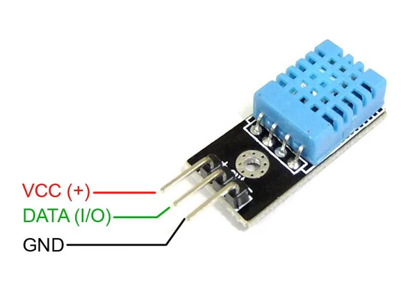
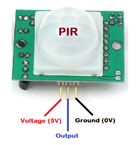
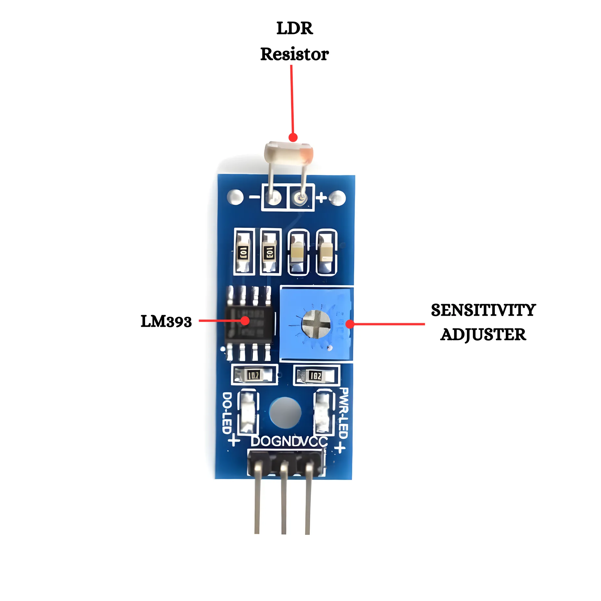

IR Sensor (FC-51)
Detects objects and black/white surfaces using infrared light. Digital output HIGH/LOW.
Specifications
Voltage5V DC
Range2 – 30 cm
OutputDigital (HIGH/LOW)
InterfaceGPIO Pin
Pin Diagram

│ ┌───────────┐ │
│ │ [LED][RX] │ │
│ └───────────┘ │
├─────────────────┤
│ VCC │ GND │ OUT │
│ 1 │ 2 │ 3 │
└─────────────────┘
■ Pin 1 VCC = Red wire → 5V
■ Pin 2 GND = Black wire → GND
■ Pin 3 OUT = Green wire → D2
Full Datasheet
Supply Voltage3.3V – 5V DC
Supply Current20 mA typical
Output TypeDigital Open Collector
Output LOW0V (object detected)
Output HIGHVCC (no object)
Detection Range2 – 30 cm (adj.)
Operating Temp-10°C to +50°C
IR Wavelength940 nm
Response Time< 2 ms
PCB Size3.2cm × 1.4cm
Pin Connection Table
| Pin No. | Pin Name | Function | Connect To |
|---|---|---|---|
| 1 | VCC | Power Supply | 5V |
| 2 | GND | Ground | GND |
| 3 | OUT | Digital Output | D2 (any digital pin) |
⚠️Avoid direct sunlight — it causes false triggers. Use the blue potentiometer to adjust detection sensitivity.
Wiring
VCC → 5V | GND → GND | OUT → D2
Arduino Code
Arduino C++
// IR Sensor – LearnEmbedded
const int irPin = 2;
void setup() { pinMode(irPin, INPUT); Serial.begin(9600); }
void loop() {
if(digitalRead(irPin) == LOW)
Serial.println("Object Detected!");
else
Serial.println("Clear");
delay(200);
}Projects You Can Build
Ultrasonic HC-SR04
Measures distance using sound waves. TRIG sends pulse, ECHO returns time-of-flight.
Specifications
Voltage5V DC
Range2 – 400 cm
Accuracy±3 mm
Beam Angle15°
Pin Diagram

Full Datasheet
Supply Voltage5V DC
Supply Current15 mA
Trigger Input10 µs HIGH pulse
Frequency40 kHz ultrasound
Range2 cm – 400 cm
Accuracy±3 mm
Beam Angle15°
Cycle Time≥ 60 ms between triggers
Distance FormulaEcho_µs × 0.034 / 2
Note3.3V unreliable
Pin Connection Table
| Pin No. | Pin Name | Function | Connect To |
|---|---|---|---|
| 1 | VCC | 5V Power | 5V |
| 2 | TRIG | Trigger Input | D9 (any digital) |
| 3 | ECHO | Echo Output | D10 (any digital) |
| 4 | GND | Ground | GND |
⚠️Always wait 60 ms between measurements. At 3.3V it may work but readings will be unreliable. Send a 10 µs HIGH pulse to TRIG, then measure ECHO duration.
Wiring
VCC→5V | GND→GND | TRIG→D9 | ECHO→D10
Arduino Code
Arduino C++
// Ultrasonic – LearnEmbedded
const int trig=9, echo=10;
void setup(){ pinMode(trig,OUTPUT); pinMode(echo,INPUT); Serial.begin(9600); }
void loop(){
digitalWrite(trig,HIGH); delayMicroseconds(10); digitalWrite(trig,LOW);
float cm = pulseIn(echo,HIGH) * 0.034 / 2;
Serial.print("Distance: "); Serial.print(cm); Serial.println(" cm");
delay(500);
}Projects You Can Build

DHT11 – Temp & Humidity
Digital sensor measuring temperature 0-50°C and humidity 20-90% with single wire protocol.
Specifications
Voltage3.3V – 5V
Temp Range0 – 50°C (±2°C)
Humidity20 – 90% (±5%)
LibraryDHT by Adafruit
Pin Diagram

Full Datasheet
Supply Voltage3.3V – 5.5V DC
Measuring Current0.5 mA
Standby Current100 µA
Temp Range0°C – 50°C ±2°C
Humidity Range20% – 90% ±5%
Sampling Rate1 Hz max
Resolution8-bit temp & humidity
ProtocolSingle-wire DHT
Pullup Resistor10 kΩ on DATA (required)
Max Cable Length20 m with 10 kΩ
Pin Connection Table
| Pin No. | Pin Name | Function | Connect To |
|---|---|---|---|
| 1 | VCC | Power 3.3–5V | 5V |
| 2 | DATA | Serial Data | D2 + 10 kΩ to VCC |
| 3 | NC | Not Connected | Leave floating |
| 4 | GND | Ground | GND |
⚠️Never sample faster than once per 2 seconds — sensor returns NaN. Always add 10 kΩ pullup resistor on DATA pin. Without it, readings will fail.
Wiring
VCC→5V | GND→GND | DATA→D2 (+ 10kΩ pullup)
Arduino Code
Arduino C++
// DHT11 – LearnEmbedded
#include <DHT.h>
DHT dht(2, DHT11);
void setup(){ Serial.begin(9600); dht.begin(); }
void loop(){
float t = dht.readTemperature();
float h = dht.readHumidity();
Serial.print("Temp: "); Serial.print(t); Serial.print("C Hum: "); Serial.println(h);
delay(2000);
}Projects You Can Build

PIR Motion Sensor (HC-SR501)
Detects human/animal movement via infrared radiation. Adjustable sensitivity up to 7m range.
Specifications
Voltage5V – 12V
RangeUp to 7 meters
Angle120°
OutputDigital HIGH/LOW
Pin Diagram

Full Datasheet
Supply Voltage4.5V – 20V DC
Supply Current< 60 µA
Output HIGH3.3V
Output LOW0V
Detection RangeUp to 7 meters
Detection Angle120°
Delay Time0.3 sec – 5 min (adj.)
Blockout Time2.5 sec after trigger
Operating Temp-15°C to +70°C
Warm-up Time30–60 sec after power-on
Pin Connection Table
| Pin No. | Pin Name | Function | Connect To |
|---|---|---|---|
| 1 | VCC | Power 5–20V | 5V |
| 2 | OUT | Motion Output | D3 (any digital) |
| 3 | GND | Ground | GND |
⚠️Wait 30–60 seconds after powering on for the sensor to stabilize. Do NOT place near heat sources (AC vents, heaters, or direct sunlight) — they trigger false detections.
Wiring
VCC→5V | GND→GND | OUT→D3
Arduino Code
Arduino C++
// PIR Sensor – LearnEmbedded
const int pir=3, led=13;
void setup(){ pinMode(pir,INPUT); pinMode(led,OUTPUT); Serial.begin(9600); }
void loop(){
if(digitalRead(pir)==HIGH){
digitalWrite(led,HIGH);
Serial.println("Motion Detected!");
} else digitalWrite(led,LOW);
delay(100);
}Projects You Can Build

LDR – Light Sensor
Resistance decreases with light intensity. Used with voltage divider to read analog light levels.
Specifications
Voltage5V DC
OutputAnalog (0–1023)
Dark Resistance~1 MΩ
Light Resistance~1 kΩ
Pin Diagram

Full Datasheet
TypeCdS Photoresistor
Dark Resistance1 MΩ (no light)
Bright Resistance1 kΩ (bright light)
Peak Wavelength560 nm (green)
Max Voltage150V DC
Max Power100 mW
Response Rise20–30 ms
Response Fall30 ms
Operating Temp-30°C to +70°C
Diameter5 mm (GL5528 type)
Pin Connection Table
| Component | Connection Point | Connect To |
|---|---|---|
| LDR Leg 1 | One end | 5V |
| LDR Leg 2 | Other end | A0 + 10 kΩ to GND |
| 10 kΩ Resistor | Between A0 and GND | GND |
ℹ️analogRead() returns 0–1023. Use map(val, 0, 1023, 0, 100) to convert to 0–100% light level. Low values = dark, high values = bright.
Wiring
LDR end1→5V | LDR end2→A0 + 10kΩ→GND
Arduino Code
Arduino C++
// LDR Sensor – LearnEmbedded
const int ldr = A0;
void setup(){ Serial.begin(9600); }
void loop(){
int val = analogRead(ldr);
if(val < 300) Serial.println("Dark – Turn ON light");
else Serial.println("Bright – Light is fine");
delay(500);
}Projects You Can Build
MQ-2 Gas Sensor
Detects LPG, smoke, alcohol, propane. Analog output proportional to gas concentration.
Specifications
Voltage5V DC
OutputAnalog + Digital
DetectsLPG, Smoke, Alcohol
Preheat Time20 seconds
Pin Diagram

Full Datasheet
Supply Voltage5V DC
Heater Voltage5V (built-in)
Heater Resistance33 Ω ± 5%
Heater Power900 mW
Detecting Range300 – 10000 ppm LPG
Preheat Time≥ 20 sec (2 min ideal)
Analog Output0V – 5V proportional
Digital OutputLOW when gas detected
Load ResistanceAdjustable on-board pot
Operating Temp-20°C to +50°C
Pin Connection Table
| Pin No. | Pin Name | Function | Connect To |
|---|---|---|---|
| 1 | VCC | 5V Power | 5V |
| 2 | GND | Ground | GND |
| 3 | A0 | Analog Output | A0 (analogRead) |
| 4 | D0 | Digital Output | D7 (digitalRead) |
⚠️ALWAYS preheat for at least 20 seconds before reading. The sensor coil gets VERY HOT during operation — do not touch the metal cap. Keep away from open flames.
Wiring
VCC→5V | GND→GND | A0→A0 | D0→D7
Arduino Code
Arduino C++
// MQ-2 Gas Sensor – LearnEmbedded
const int gasA=A0, gasD=7, buzz=8;
void setup(){ pinMode(gasD,INPUT); pinMode(buzz,OUTPUT); Serial.begin(9600); }
void loop(){
Serial.print("Gas Level: "); Serial.println(analogRead(gasA));
if(digitalRead(gasD)==LOW){
digitalWrite(buzz,HIGH);
Serial.println("WARNING: Gas Detected!");
} else digitalWrite(buzz,LOW);
delay(500);
}